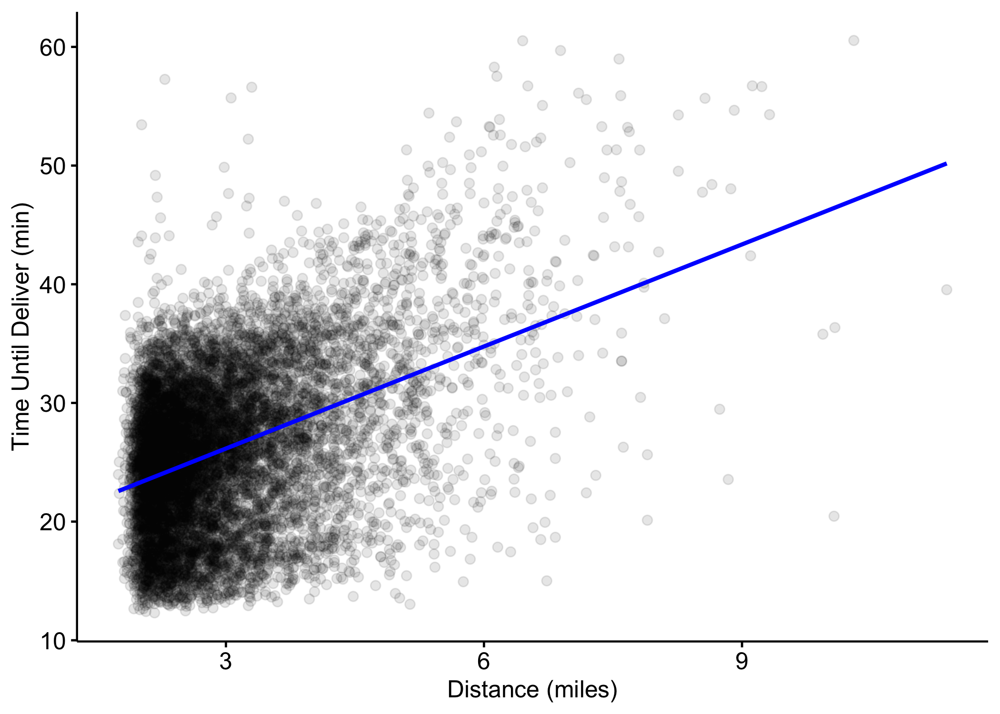
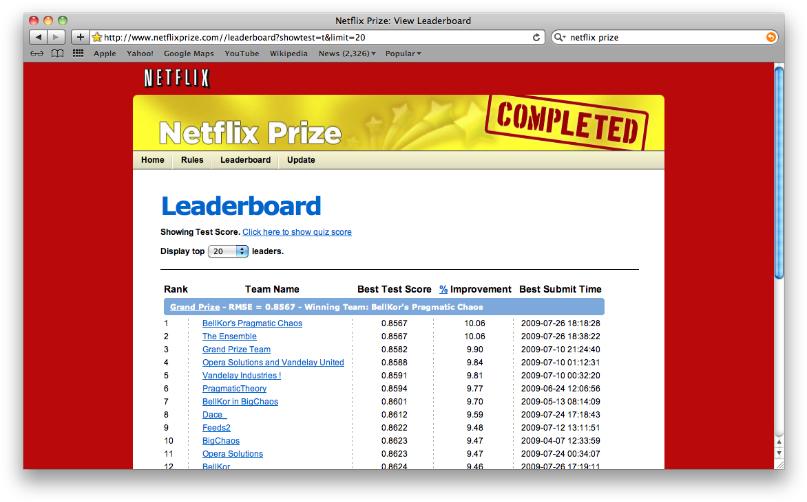
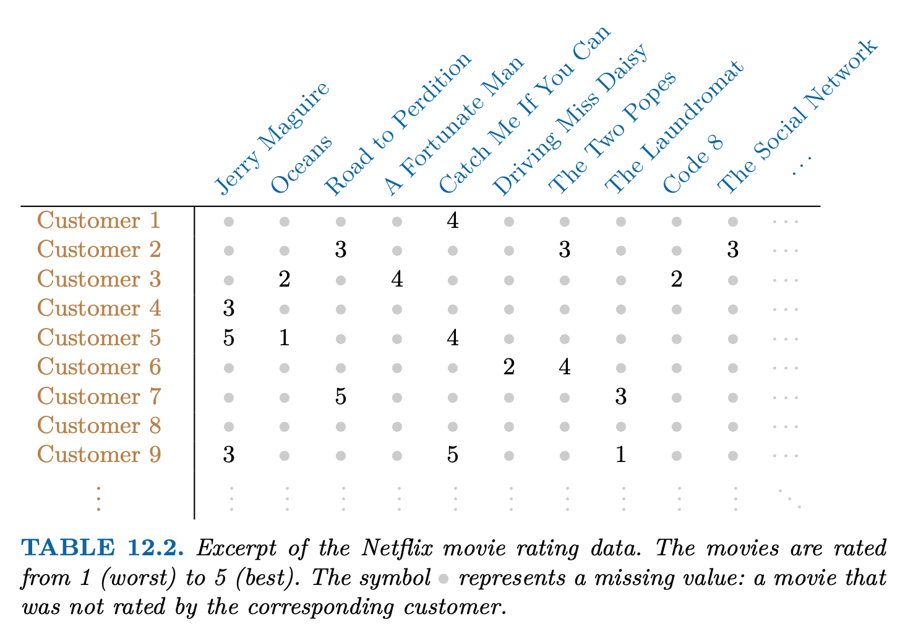
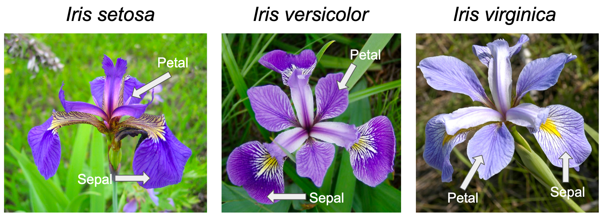
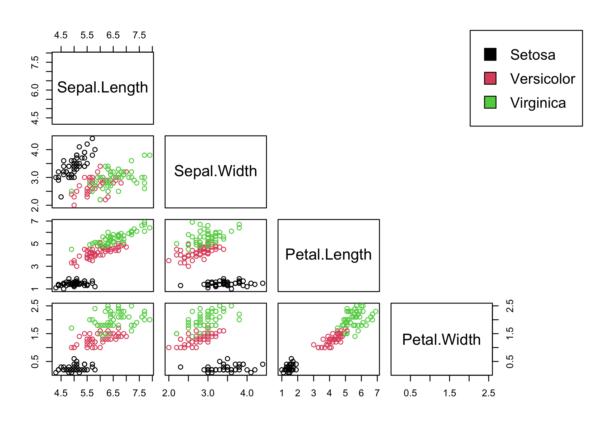
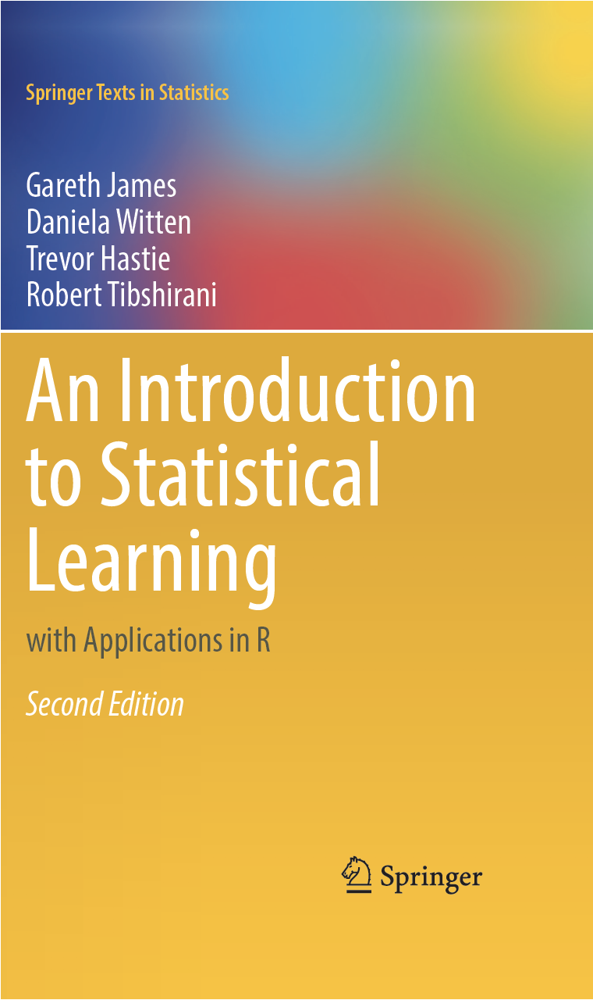

time_to_delivery hour day distance item_01 item_02 item_03 item_04 item_27
1 16.1106 11.899 Thu 3.15 0 0 2 0 0
2 22.9466 19.230 Tue 3.69 0 0 0 0 0
3 30.2882 18.374 Fri 2.06 0 0 0 0 0
4 33.4266 15.836 Thu 5.97 0 0 0 0 1
5 27.2255 19.619 Fri 2.52 0 0 0 1 1
6 19.6459 12.952 Sat 3.35 1 0 0 1 0Introduction to Statistical Learning
Introduction to Statistical Learning - PISE
Statistical Learning Problems
Predicting future values
Recommender Systems
Dimension Reduction
Cluster Analysis
Predicting future values
Predicting the food delivery time
- Machine learning models are mathematical equations that take inputs, called predictors, and try to estimate some future output value, called outcome.
\underset{outcome}{Y} \leftarrow f(\underset{predictors}{X_1,\ldots,X_p})
For example, we want to predict how long it takes to deliver food ordered from a restaurant.
The outcome is the time from the initial order (in minutes).
There are multiple predictors, including:
- the distance from the restaurant to the delivery location,
- the date/time of the order,
- which items were included in the order.
Food Delivery Time Data
The data are tabular, where the 31 variables (1 outcome + 30 predictors) are arranged in columns and the the n=10012 observations in rows:
Note that the predictor values are known. For future data, the outcome is unknown; it is a machine learning model’s job to predict unknown outcome values.
Outcome Y
Predictor X_1

Regression function
A machine learning model has a defined mathematical prediction equation, called regression function f(\cdot), defining exactly how the predictors X_1,\ldots,X_n relate to the outcome Y: Y \approx f(X_1,\ldots,X_p)
Here is a simple example of regression function: the linear model with a single predictor (the distance X_1) and two unknown parameters \beta_0 and \beta_1 that have been estimated:
We could use this equation for new orders:
If we had placed an order at the restaurant (i.e., a zero distance) we predict that it would take 17.5 minutes.
If we were four miles away, the predicted delivery time is 17.557 + 4\times 2.867 \approx 29 minutes.
Predictor X_2
3D scatter plot
Regression tree
A different regression function
\begin{align} delivery \,\, time \approx \:&17\times\, I\left(\,order\,\,time < 13 \text{ hours } \right) + \notag \\ \:&22\times\, I\left(\,13\leq \, order\,\,time < 15 \text{ hours } \right) + \notag \\ \:&28\times\, I\left(\,order\,\,time \geq 15 \text{ hours and }distance < 4 \text{ miles }\right) + \notag \\ \:&36\times\, I\left(\,order\,\,time \geq 15 \text{ hours and }distance \geq 4 \text{ miles }\right)\notag \end{align}
The indicator function I(\cdot) is one if the logical statement is true and zero otherwise.
Two predictors (distance X_1 and order time X_2) were used in this case.
Partition of the predictors space (X_1,X_2)
Recommender Systems
The Netflix Prize
Competition started in October 2006. The data is ratings for 18000 movies by 400000 Netflix customers, each rating between 1 and 5.
Data is very sparse - about 98% missing.
Objective is to predict the rating for a set of 1 million customer-movie pairs that are missing in the data.
Netflix’s original algorithm achieved a Root Mean Squared Error (RMSE) of 0.953. The first team to achieve a 10% improvement wins one million dollars.


Recommender Systems
Digital streaming services like Netflix and Amazon use data about the content that a customer has viewed in the past, as well as data from other customers, to suggest other content for the customer.
In order to suggest a movie that a particular customer might like, Netflix needed a way to impute the missing values of the customer-movie data matrix.
Principal Component Analysis (PCA) is at the heart of many recommender systems. Principal components can be used to impute the missing values, through a process known as matrix completion.
Dimension Reduction
\underset{243 \times 220}{X}
Image = data
An image (in black and white) can be represented as a data matrix (n rows \times p columns): \underset{n \times p}{X} where the grayscale intensity of each pixel is represented in the corresponding cell of the matrix.
Lighter colors are associated with higher values, while darker colors are associated with lower values (in the range [0,1])
V1 V2 V3 V4 V5 V6 V7
[1,] 0.5098039 0.5098039 0.5098039 0.5098039 0.5098039 0.5098039 0.5098039
[2,] 1.0000000 1.0000000 1.0000000 1.0000000 1.0000000 1.0000000 1.0000000
[3,] 1.0000000 1.0000000 1.0000000 1.0000000 1.0000000 1.0000000 1.0000000
[4,] 1.0000000 1.0000000 1.0000000 1.0000000 1.0000000 1.0000000 1.0000000
[5,] 1.0000000 1.0000000 1.0000000 1.0000000 1.0000000 1.0000000 1.0000000
[6,] 1.0000000 1.0000000 1.0000000 1.0000000 1.0000000 1.0000000 1.0000000
[7,] 1.0000000 1.0000000 1.0000000 1.0000000 1.0000000 1.0000000 1.0000000
[8,] 1.0000000 1.0000000 1.0000000 1.0000000 1.0000000 1.0000000 1.0000000
[9,] 1.0000000 1.0000000 1.0000000 1.0000000 1.0000000 1.0000000 1.0000000
[10,] 1.0000000 1.0000000 1.0000000 1.0000000 1.0000000 1.0000000 1.0000000Image compression
Original image made by 53460 numbers
Compressed image made by 4850 numbers
Cluster Analysis
Clustering
Clustering refers to a very broad set of techniques for finding subgroups, or clusters, in a data set.
We seek a partition of the data into distinct groups so that the observations within each group are quite similar to each other
We must define what it means for two or more observations to be similar or different
Iris flowers
Iris flowers, from the genus Iris (derived from the Greek word iris, meaning “rainbow”), are classified into three species:

Iris data
This dataset, originally collected by Edgar Anderson and later published by Fisher in 1936, gives the measurements in centimeters of the variables sepal length and width and petal length and width, respectively, for 50 flowers from each of 3 species of iris:
Scatterplot
Scatterplot matrix

K-Means clustering
Cross-tabulation
1 2 3
setosa 0 0 50
versicolor 2 48 0
virginica 36 14 0Supervised Versus Unsupervised
The Supervised Learning Problem
Outcome measurement Y (also called dependent variable, response, target).
Vector of p predictor measurements X=(X_1,X_2,\ldots,X_p) (also called inputs, regressors, covariates, features, independent variables).
In the regression problem, Y is quantitative (e.g price, blood pressure).
In the classification problem, Y takes values in a finite, unordered set (survived/died, digit 0-9, cancer class of tissue sample).
We have training data (x_1, y_1), \ldots , (x_N , y_N ). These are observations (examples, instances) of these measurements.
Objectives
On the basis of the training data we would like to:
Accurately predict unseen test cases.
Understand which inputs affect the outcome, and how.
Assess the quality of our predictions.
Unsupervised learning
No outcome variable, just a set of predictors (features) measured on a set of samples.
objective is more fuzzy — find groups of samples that behave similarly, find features that behave similarly, find linear combinations of features with the most variation.
difficult to know how well your are doing.
different from supervised learning, but can be useful as a pre-processing step for supervised learning.
Statistical Learning versus Machine Learning
Machine learning arose as a subfield of Artificial Intelligence.
Statistical learning arose as a subfield of Statistics.
There is much overlap - both fields focus on supervised and unsupervised problems:
Machine learning has a greater emphasis on large scale applications and prediction accuracy.
Statistical learning emphasizes models and their interpretability, and precision and uncertainty.
Course text

The course will cover some of the material in this Springer book (ISLR) published in 2021 (Second Edition).
Each chapter ends with an R lab, in which examples are developed.
An electronic version of this book is available for free from https://www.statlearning.com/